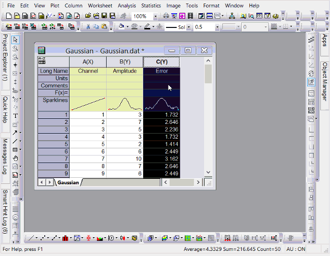
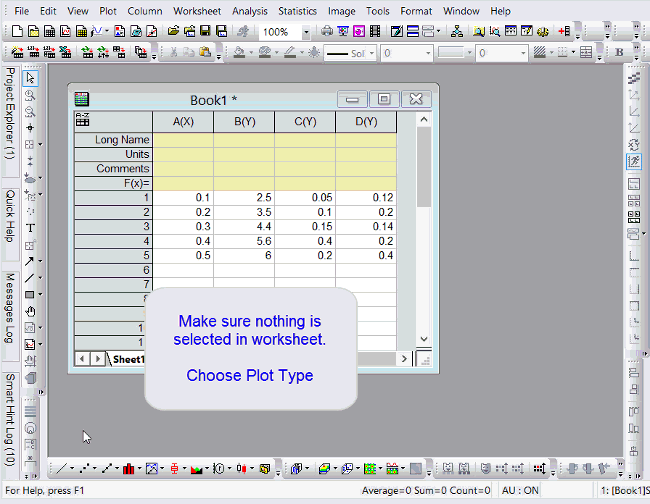
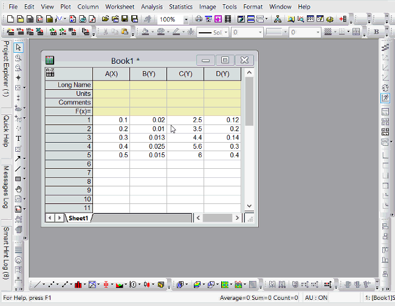
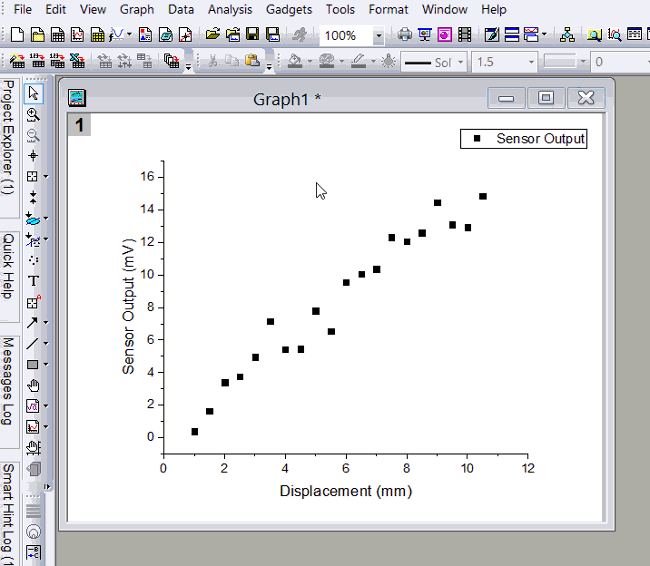
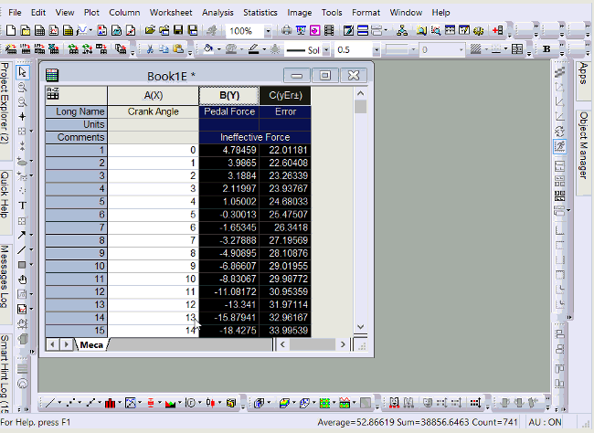
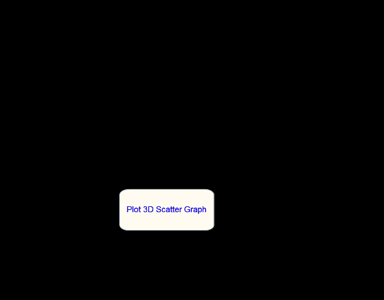

FAQ-669 2Dおよび3Dエラーバーの作図方法は？
errbar-display-in-plot
最終更新日: 2019/1/6
Yエラーバーのプロット
各列には、X、Y、Z、Yエラー、ラベルなどのプロット指定があります。列をYエラーとして属性を設定し、左側のY列とYErr列を一緒にプロットすると、YErr列は次のようになります。
Yエラーバーとしてプロットされています。 グラフのエラーバーをダブルクリックすると、作図の詳細ダイアログでそれらをさらにカスタマイズできます。
- 
異なる正および負のYエラーバーをプロットする
正と負の誤差範囲が異なる場合は、2つの方法があります。
- 印刷設定ダイアログを使用
- ワークシートで何も選択されていないことを確認して、プロットタイプを選択してください。
- 作図のセットアップダイアログで、中央パネルを右クリックしてYErr +とYErr-の列をオンにします。
- プロットするX、Y、YErr +、YErr-データを指定します。
- 
- 2つのYエラーバーをプロットして、その一部を非表示にします。
- 両方のエラーデータ列をYエラーに設定します。プロットするには、Yデータと両方のエラーデータ列をハイライトします。
- プロットをダブルクリックして、作図の詳細ダイアログを開きます。
- 左側のパネルで対応するエラーバーのエントリを選択し、[エラーバー]タブの[マイナス]または[プラス]チェックボックスをオフにします。
プロットXエラーバー
Yエラーバーをプロットするのと同じですが、列がXエラーとして設定されている場合は、Xエラーバーとしてプロットされます。
- 
データセット統計からYエラーバーを追加
エラーデータ列がない場合は、単純なデータセット統計を計算して統計エラーを追加できます。 グラフウィンドウをアクティブにして、挿入：エラーバーを選択します。
- 
塗りつぶしバンドとしてエラーバーをプロット
データが非常に密集していると、すべてのエラーバーを確認するのが困難になることがあります。エラーバーを塗りつぶされたバンドとして表示することをお勧めします。
これを行う方法は次のとおりです。
- エラーバー付きのグラフで、エラーバーをダブルクリックします。
- 左側でエラーデータを選択した状態で、直線として接続、スプラインなどを設定します。
- 曲線下の領域を塗りつぶすチェックボックスをオンにします。
- パターンタブで、塗りつぶしの色とパターンを設定します。
- 
3Dグラフにエラーバーをプロット
XYZ列から3D散布図をプロットする場合は、作図の詳細ダイアログを開き、ワークシートの他の列をエラーバーとして指定できます。Originは3DグラフのX、Y、Z方向のエラーバーをサポートしています。
- 
行列ブックから3D散布図をプロットする場合、エラーバーデータは同じ行列シート内の行列オブジェクトに配置する必要があります。 例えば。 Matrixシートの右上隅にあるDアイコンをクリックして追加を選択します。作成した新しい行列オブジェクトに、エラーバーデータを入力します。次に、作図：3D線+散布図：3D散布図+エラーバーを選択します。
 |
この様式は、エラー情報の表示という一定条件下で役に立ちますが、線形フィットや非線形曲線フィットツールはフィットの際に1つのエラーデータセットのみを使用し、正と負両方向の単一値オフセットとして扱われることに注意してください。つまり、「Xエラーバー」と「負のYエラーバー」は無視され、「正のYエラーバーが「正負のYエラーバー」として扱われます。
Xエラー付き線形フィットを実行するには、線形フィット：Xエラーありツールを使用し、Xエラー付き非線形曲線フィットはダイアログ内で設定します。詳細はこちらをご覧ください。
|
キーワード: エラーバー